Social Ninja
Social Ninja - Facebook Twitter Youtube Campaigner
- Created: 10-Oct-2011
- Latest update: 28-Nov-2015
- Author: InspiredDev
- inspire007.com
- Author Email: iamrock68@gmail.com
Thank you for purchasing the script. If you have any questions that are beyond the scope of this help file, please feel free to email via my user page contact form here. Thanks so much!
Quick Start Guide
Setup
First unzip the files into a folder. Open your browser and navigate to the url where you copied the scripts. For the first time, the app will redirect you to the setup page. If your server meets the minimum requirements for setup, the setup wizard will allow you to continue otherwise it will show error message. Please adjust your server settings if any error message appears. If there is no error message but warning message (brown colored warning messages), you can edit server config for optimum performance. However if you wish, you can ignore those messages but remember that some features may not work properly if ignored. Input your database info into the input boxes as shown in image 1. Test your connection and press next button. This will copy sql tables into your database. In the next step, most of the fields will be auto detected and auto filled. See image 2. If some fields are not auto completed, please complete those fields with appropraite values. Take help from Setup Guide section if needed. Next step is App Setup. See image 3. You do not have to complete this right now. Please check Setup Guide section for more info. Next step is Add Admin. See image 4. Add an admin account so you can manage the site and create users. In the final step (image 5 & 6), the app attempts to add cron task automatically in the server. However, if it fails to do it automatically please follow the instructions shown on the screen and complete the tasks manually. After setup is complete, login with your admin login and password and start creating campaigns and folders. If you did not add an app while setup, you have to add app from dashboard > settings tab before you can add social accounts.
Image Preview
 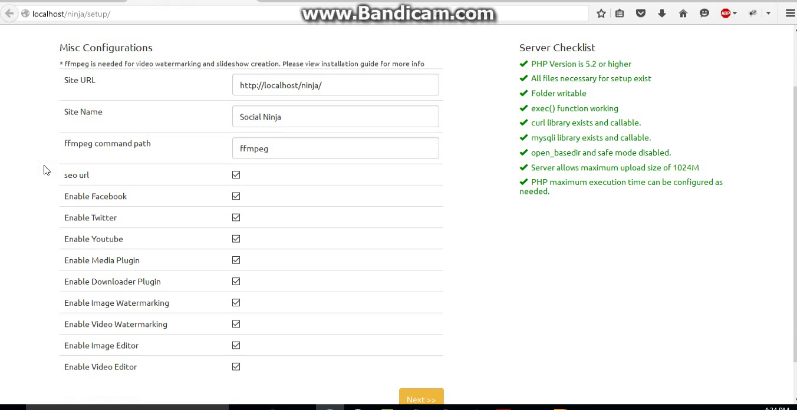
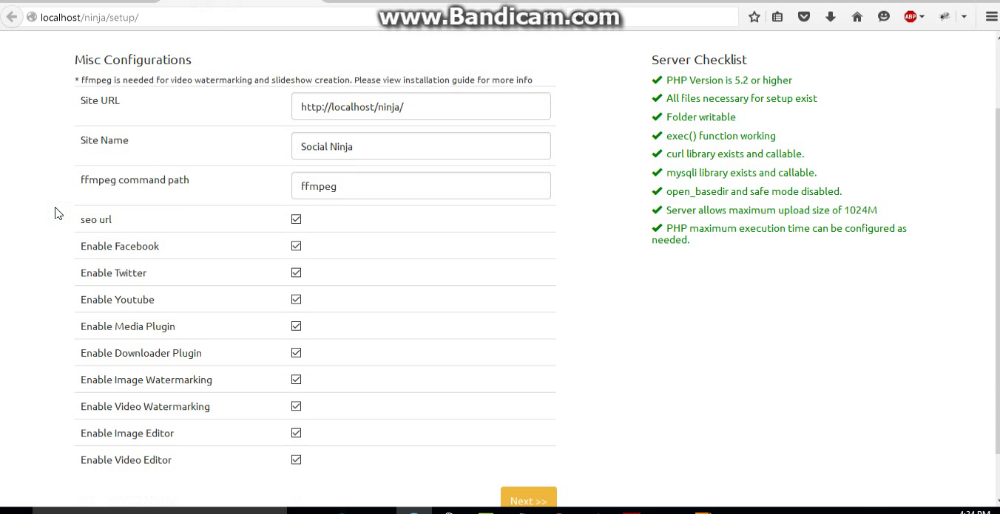
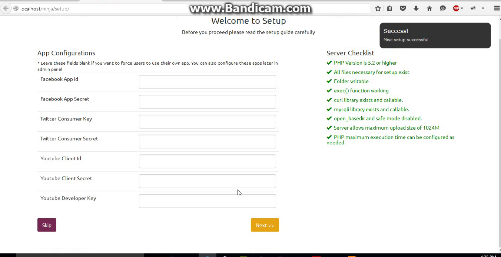 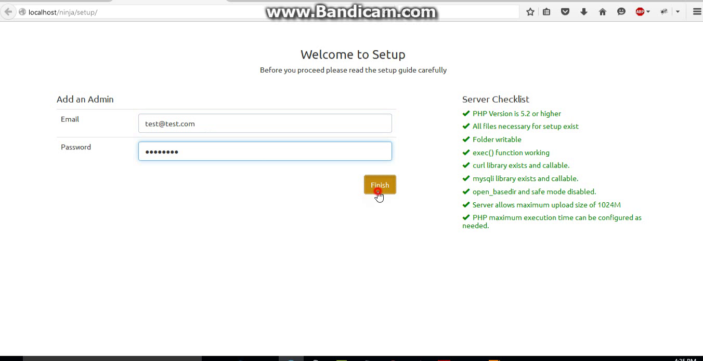
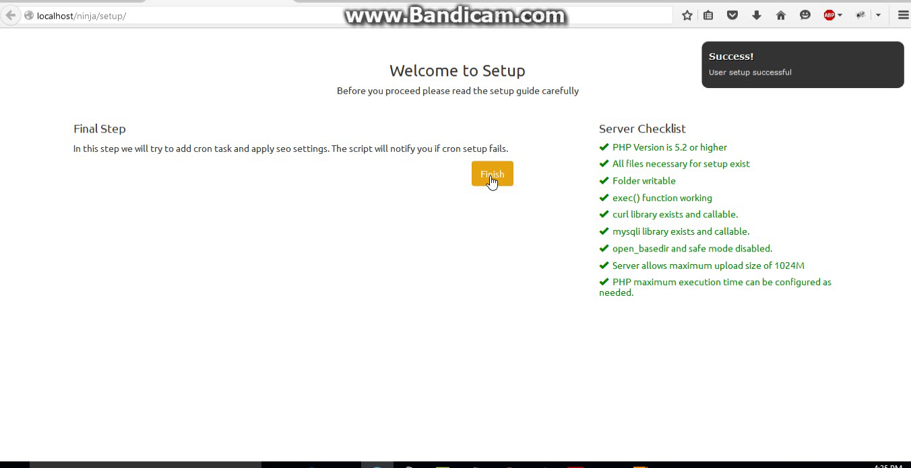 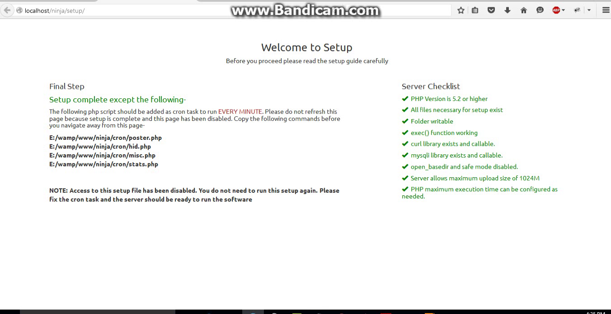
Video preview
Setup Guide
Server Requirements
In order to use Social Ninja, your server must pass the following requirements-
Apache Webserver PHP version must be at least 5.2 or higher Mysql Database engine with php mysqli extension Server must allow htaccess rules PHP must have write permissions to folders and files. It is suggested that you use SuPHP instead of modPHP curl library must be installed and enabled to use in PHP Upload max size and post max size at least 10MB
The following requirements are suggested but not necessary. However some functions of the script may fail if these requirements are not fulfilled-
ffmpeg installed on server exec() function enabled and callable via PHP to use ffmpeg Upload max size and post max size 512MB for large video upload If you actively use video editor and video watermarking with large and high resolution videos, you must have enough CPU and RAM in your server to encode videos. Low CPU or RAM may result in encode failure
*To change maximum execution time, allowed memory limit, upload and post max size, you have to edit php.ini file
*The software will override maximum execution time using set_time_limit() function. In some cases, PHP is not allowed to increase time limit using set_time_limit(), in those cases scripts may fail while watermarking or posting albums
*Low memory allowance for PHP may result in ffmpeg encoder failures
*Changing max execution time and memory is not necessary until long running scripts fail to work correctly
ffmpeg installation
If you want to use video editing, watermarking and slideshow creation function enabled, you must install ffmpeg on your server.
ffmpeg installation guide is available here https://trac.ffmpeg.org/wiki/CompilationGuide
After installing ffmpeg from this guide, ffmpeg is copied in to /root/bin directory which is not accessible to PHP. So you must copy those files to /usr/local/bin and use that path while setup. For windows use compiled ffmpeg.exe from https://ffmpeg.org/download.html#build-windows
If you don't install ffmpeg please uncheck Video Watermarking Enabled and Video Editing Enabled options while setup
Please note that ffmpeg installation is not covered in support. You will have to install it yourself or hire someone to install it for your server.
Database
You need a mysql database engine to run this script. In database setup side, you just have to create an empty database and an user (if needed). Actually you can use any user with access permission to the created database. Remember this user details, database name and enter them in setup step-1. Setup wizard then automatically creates the tables for you.
Misc Setup
The following fields are needed for setup-
"Site URL": THIS IS VERY IMPORTANT. Site URL is the url to the directory where you copied the script. This value is automatically filled. However, you must double check if automatically filled value is correct or not. If incorrect please ammend it before submitting. "Site Name": This is upto you. Choose any sitename. This name will be displayed in the home page and title "ffmpeg command path": Put the ffmpeg path that you installed in ffmpeg installation section. This value is usually /usr/local/bin/ffmpeg or /usr/bin/ffmpeg. ffmpeg is necessary to watermark video, creating slideshow and screenshots of video. If you have spaces in the path of ffmpeg, please double quote the path. For example : "/usr/local/bin/test folder/ffmpeg" "seo url": Enable seo url options will generate SEO friendly URL. Anyways, the server must allow rewrite rules to be overridden to use this feature. Facebook, Twitter, Youtube Enable: If you uncheck these options, login or posting to the corresponding sites will be disabled "Media Plugin": Media plugin lets you edit, crop, watermark images and also lets you create meme from images. This option does not consume any server resource. All editing and effects are applied using HTML5 Canvas. So you can allow this plugin without any hesitation. Users can import created images through the plugin to their folders "Downloader plugin": This plugin allows users to download videos from youtube, dailymotion, vimeo, facebook and import them to their folders. This plugin will consume bandwidth while downloading videos. So enable this plugin considering your bandwidth allowance. "Image/Video Watermarking": As the name implies "Image and Video editor": You can optionally select which editor will be enabled. Media plugin lets you enable/disable both of these editors together where image and video editor options allow you to enable/disable them selectively. "Public Signup": This options determines whether visitors are allowed to create an account on the site. This option is turned off by default.
App Setup
App setup can be skipped primarily. If you want users use their own app, please leave these fields blank. Letting users use their own app is a good idea to avoid suspension of your own apps when users post illegal contents or bulk contents.
"Facebook App Setup": Create a facebook app from here https://developers.facebook.com/apps/. After creating the app just note the app id and secret keys to put while setup. "Twitter App Setup": Create an app from https://apps.twitter.com/. Please put any URL as Callback URL in twitter app settings. Without setting this option, you will not be able to login. As usual note the app id and secret. Also don't forget to put a callback url in your app settings. Any callback url will work. "Youtube App Setup": This is somehow a complex task. Follow the steps here https://developers.google.com/youtube/registering_an_application?hl=en. When you create an OAuth 2.0 application, you have to enter redirect URIs. Use SITE URL + dologin.php as redirect URI. For example if your Site URL is http://abc.com/thisscript/ then redirect URI will be http://abc.com/thisscript/dologin.php. Youtube Client Id and Youtube Client Secret is the id and secret of OAuth 2.0 client ID and Youtube Developer Key is the Server API key. URL for google app management is https://console.developers.google.com/project. Make sure you enable youtube data api in google console project.
Watch video on facebook app setup: https://www.youtube.com/v/rw8wiEAC8iQ&start=9&end=140&autoplay=1
Watch video on twitter app setup: https://www.youtube.com/v/rw8wiEAC8iQ∓start=141&end=248&autoplay=1
Watch video on youtube app setup: https://www.youtube.com/v/rw8wiEAC8iQ&start=249&end=413&autoplay=1
Add an Admin
In last step, you will have to add an admin account to operate the site. This account will be super admin having the administrative power to operate the Site. You will have to enter a valid email id and at least a 6 characters long password to continue.
Cron Setup
In linux servers, the script will try to automatically add necessary cron task. But if failed, it will alert you and ask you to set the cron tasks yourself. Necessary cron commands will be shown in the last step of setup. All the scripts must run each minute. If you have windows server, you will have to setup cron yourself as the script is not capable of adding cron in windows.
Thats all you need to know before setup. You can also change almost all the options later in admin panel. After setup you can login with admin password and create folders, files and campaigns. Please watch the after setup guide video below-
Setup is now complete. After setup login with your admin password and add new custom membership plan or user if needed (not necessary). Watch the video Getting Started with Admin Panel : https://www.youtube.com/watch?v=Nauuu4qeF58
User Guide
Adding user accounts
A user can join by signing up for an account when signup is enabled or can be added by an admin from Admin > Admin Panel. In this page click the Add New User button and fill up the form with necessary details. When an admin adds an user, the user is emailed with their login information i.e. email and password. Using the email and password, they can access their account. However, admins can choose how much server space they can use for uploads and how many posts they can create each day using this software.
Adding social accounts
Each user can add social accounts from Settings tab in dashboard. However, one cannot add account from a social media which is disabled from admin panel. If admins did not configured any global app to be used, each user must add their own social media apps. Follow the next section for app setup. When social accounts are added, all the access tokens are refreshed and in case of facebook, all your pages, groups and events are refreshed. You have the options to delete an account from server once added.
App Setup
In this software, apps can be setup in two ways - either by admin or by the users. When admins setup apps, all the users can use that app. But if any user wants to use their own app, they can setup different app from their dashboard. If no apps has been setup by admins, users must setup their own app before adding accounts.
"Facebook App Setup": Create a facebook app from here https://developers.facebook.com/apps/. After creating the app just note the app id and secret keys to put while setup. "Twitter App Setup": Create an app from https://apps.twitter.com/. As usual note the app id and secret "Youtube App Setup": This is somehow a complex task. Follow the steps here https://developers.google.com/youtube/registering_an_application?hl=en. When you create an OAuth 2.0 application, you have to enter redirect URIs. Use SITE URL + dologin.php as redirect URI. For example if your Site URL is http://abc.com/thisscript/ then redirect URI will be http://abc.com/thisscript/dologin.php. Youtube Client Id and Youtube Client Secret is the id and secret of OAuth 2.0 client ID and Youtube Developer Key is the Server API key. URL for google app management is https://console.developers.google.com/project. Don't forget to turn on Youtube Data API on your console project.
Watch video on facebook app setup: https://www.youtube.com/v/rw8wiEAC8iQ&start=9&end=140&autoplay=1
Watch video on twitter app setup: https://www.youtube.com/v/rw8wiEAC8iQ∓start=141&end=248&autoplay=1
Watch video on youtube app setup: https://www.youtube.com/v/rw8wiEAC8iQ&start=249&end=413&autoplay=1
Creating folders and uploading files
You can create new folders and upload files as per your limit set by admins. Only jpg, png and gif files are accepted among images and wmv, flv, mp4, avi, mpeg, m4v, mpg, mkv, 3gp, mov, webm are accepted among video files. Maximum size for image upload is 5MB and maximum size for video upload is 512MB. These limits can be configured by editing config.php file. The mentioned limits are set by default. In case of images and text files, you can only add a caption that will be posted along the image or as a text status. But for video uploads, you have the options to set title, description, tags and categories. These values are useful for youtube uploads. To edit title, description, tags etc for a video, click the cog icon under the file title bar. You can use spintax and nested spintax in file captions, text status and comments.
Adding captions to files
You can add a text caption/link to any of your files. Caption can be added either before uploading files or after upload. If you want to add caption to all of the files you upload next, click the Caption button on top of the file upload page. Then save your caption in the text box. You can also use file name as caption. For this just check the tickbox beside Use filename as caption label.
From version 1.6, we introduced use of variables in captions. Available list of variables are given below-
[SCHEDULE_NAME]
Shortcut : Ctrl+S (Name of the schedule group will be posted when this variable is used) [FIRST_NAME]
Shortcut : Ctrl+F (First name of your social profile will be posted) [LAST_NAME]
Shortcut : Ctrl+L (Last name of your social profile will be posted) [FULL_NAME]
Shortcut : Ctrl+U (Full name of your social profile will be posted) [TIME]
Shortcut : Ctrl+T (Posting time will be added in this format hh:mm:ss AM/PM) [DATE]
Shortcut : Ctrl+D (Posting date will be added in this formart dd-Mon-Year) [DATE_TIME]
Shortcut : Ctrl+E (Date time of post in the format dd-Mon-Year hh:mm:ss AM/PM) [PAGE_NAME]
Shortcut : Ctrl+P (Page name where the status is being posted) [FILE_NAME]
Shortcut : Ctrl+I (Name of the uploaded file will be posted) [TAG_ME]
Shortcut : Ctrl+M (You facebook profile will be tagged in post. Facebook api currently does not work tagging with @[id] within app. So your profile will be tagged in - with) (* works with facebook pages text status, links, photo and twitter tweets only. This will not work with youtube, facebook profile, groups or events posts) [GREETINGS]
Shortcut : Ctrl+G (Good morning/afternoon/evening/night greetings with post. To customize messages edit your default language file)
Watch the video to learn how to use variables in post : https://www.youtube.com/watch?v=pU4xJ73269E
Posting links
In order to post links, create a text file and put your link there. If a valid link is found we will automatically detect the link and embed it into status.
However, if you want to use your own link title, image and description for facebook - click the cog icon beside the text file. It will open a form to fill up custom link title, description and images.
Learn how to add custom title, description & image in link : https://www.youtube.com/watch?v=NOT4gMaliok
Post a file now
This option has been introduced from version 1.7. You can post a file immediately using this. To post a file immediately, click the Share icon beside a file name. A popup box will appear. Select profiles to post and fill in necessary details. Finally submit. Follow the image below for more clarification-
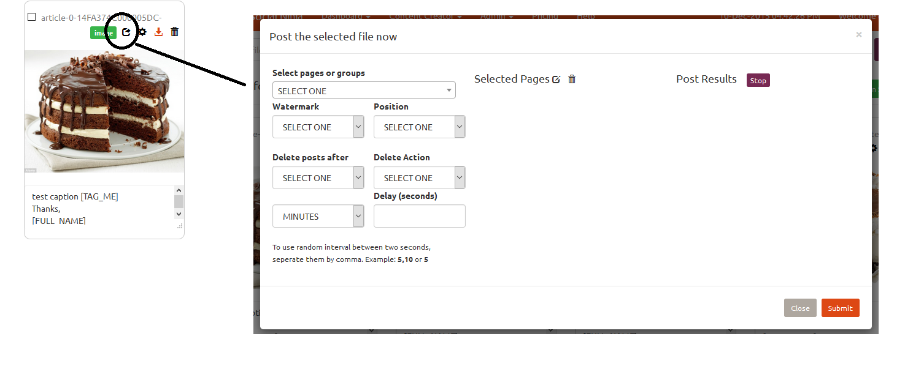
Facebook fanpages, groups and events
You can delete imported facebook fanpages, groups or events from dashboard. But unless the groups and events are imported manually, they will be added again each time you login with the owner facebook id to refresh tokens/pages. From Settings tab of dashboard, you can import groups and events. This is helpful to import the groups you have joined since new version of facebook api does not allow fetching a list of groups the user has joined in.
Youtube upload default settings
This option can be set to use common title/description/tags/category for all of your video uploads. When you do not configure individual title/description/tags for each video, the default settings will be used by the app while posting them on facebook or youtube
RSS feeds
RSS Feeds tab in dashboard allows you to add RSS feed URLs and titles as many as within the limits set by admins. These feeds can later be used on scheduling automatic posts in facebook. Please note that RSS feed publishing is only allowed for facebook pages and groups. Twitter is disabled from publishing RSS feeds because this may risk your account to suspension. When RSS feed is used for posting, the schedule will run indefinitely until stopped manually.
Watch the video to learn how to add RSS feeds : http://www.youtube.com/watch?v=Sis8ql3Me0k
Creating and managing schedule groups
Understanding the difference between schedule and schedule group
A schedule deals with a single profile/page/group/event and posts on that individual profile maintaining a time delay. On the other hand schedule group is a collection of schedules grouped together for easy and bulk editing.You can create and manage schedules from dashboard. In this help file we will only focus on some features that you may not understand or seems confusing at first glance.
"Post Sequence": This option lets you choose how posts are created. They can be randomly chosen from your selected folders or posted as they are positioned inside the folder. Choosing slideshow option will create a slideshow of maximum 100 images from selected folder and post it as a video in selected sites. You can choose slide duration and slide transition effect. When post as album option is chosen, the photos will be posted as album in facebook and twitter. Please note that, albums cannot be posted in facebook groups or events. Photo limit for album is 100 for facebook and 4 for twitter. Among other options, you basically have the option to choose the sequence of which types of files are posted first (Image, text, video) "Repeat schedule": If this option is turned on, a schedule will be not be repeated. When all the files are posted, schedule will stop "Repeat campaign": If this option is turned on, the campaign or schedule group is restart when all the schedules under this groups is done "Delete posted files": When enabled, each file that is posted is deleted from server "Schedule enabled": This options lets you enable or disable a schedule group. In case you want to start/stop a schedule group, use this option "Post Only from" -- "To": You can choose when the app posts in your social accounts around the days. This is useful when you target audience a specific timezone. Prevent flooding your profile with posts when your fans are sleeping. "Delete Posts After" and "Delete Action": These two options allow you to choose if you want your post to be deleted/hidden after certain time period. Hide option can only be used for facebook pages. Please note that if you update this options while a campaign is running, only new posts that were created will be affected. The posts that were already created before change will not be affected. "Start Campaign From": When to start posting "End Campaign At": When to stop posting under the campaign "Post a file only once in whole campaign": If you check this option, a file from your selected folder will be posted only once in one of the selected pages. This means a file will not get posted in two different groups or pages. When all your files from the folder is used for posting, any other incomplete schedule will be marked as complete without posting anything. "Synchronous Posting": If synchronous post is enabled, the 2nd post in any of the selected page will wait until all the selected pages complete their 1st post
Learn how to add schedules: https://www.youtube.com/watch?v=5oK3y4VRJ_w
Advanced Schedule Options
Social Ninja offers two advanced schedule options - comment bumping and conditional post deletion. You can apply these options on individual schedule or a group of schedule. When applied to schedule group, all the schedules on the group is affected. On the other hand, when applied to individual schedule only that schedule is affected. We discussed how you can change or add advanced options on schedule group and individual schedule.
"Comment bumping": In facebook groups and events, the post which was last commented is shown at the top. So you can set a comment bumping action to bump your posts at a random interval. You can put a list of comments that will be used for bumping. Use spintax for randomness. Posting the same comment all the time may flag your post/comments as spam and hidden. "Advanced post deletion": You can choose to delete your posts if they do not get enough likes/comments/views/favories/retweets in a specific time. For youtube and facebook pages, you can also schedule a deletion if your posts get enough dislikes/negative impressions in a time frame. "Reset and Restart All Schedule": If you want to reset schedules and restart posting from anew go with this button. "Remove All Deletion Trigger": This option will clear all coditional post deletion trigger. Use with caution when you apply this to a schedule group. "Stop Bumping": To stop comment bumping choose DISABLE BUMPING option from Bumping Delay dropdown menu.Follow the image shown below and save the settings.
Watch video instructions on how to use comment bumping https://www.youtube.com/watch?v=v1jf7Kj_WMU
Picture: Disable bumping

Using advanced scheule options
Using advanced options on schedule group
This option is not available when you create a new schedule group. But when you edit a schedule group, you
will find options to use comment bumping. See the following images for better understanding-
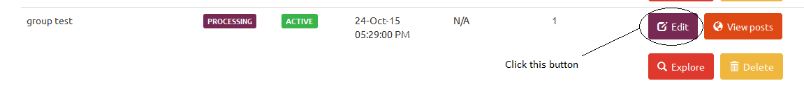 
When you click Advanced options button, the following modal will popup-

Configure as necessary.
Using advanced options on individual schedule
If you click on the Explore button next to a schedule group, you will be presented with a list of all the pages/profiles scheduled in this group and a button Options next to each schedule. See images below. Clicking this Options button will give you access to advanced scheduling options like comment bumping and post deletion based on post insights for each individual schedule. Using this option, you can set comment bumping and conditional post deletion trigger for each individual schedule where in the last section we learnt how to adjust these settings for a whole schedule group. The rules are all the same, only difference is that previous section deals with schedule group affecting all schedules in the group and this section deals with individual schedules.


Bulk facebook groups and events import
To find this option navigate to Dashboard > Settings > Import Facebook groups/events. You can import facebook groups and events in bulk in two ways - either put individual numeric IDs of groups & events or put HTML source code of your My Groups facebook page. In most cases you will not have to import events manually because all of your events are already fetched when you add your facebook account. So events can only be added using numeric ID. But in case of groups, bulk import using HTML source code is supported.
HTML source code of the following pages can be used for group-
https://mbasic.facebook.com/groups/?seemore&refid=27
https://mbasic.facebook.com/groups/
Only public and closed groups can be added this way.
Watch video tutorial here: https://www.youtube.com/watch?v=BMC_tG9-LxM
Creating and managing categories
From version 1.5 we introduced an option to create and manage page categories. Using this option you can save selected profiles to a category and use them again and again while creating new schedules. This option will ease your page selection task while adding campaigns.
To create a category, go to Categories in dashboard. Then click Create or edit category button. Then select your pages or groups, enter a category name and save it. This category name can be used later while making schedules.
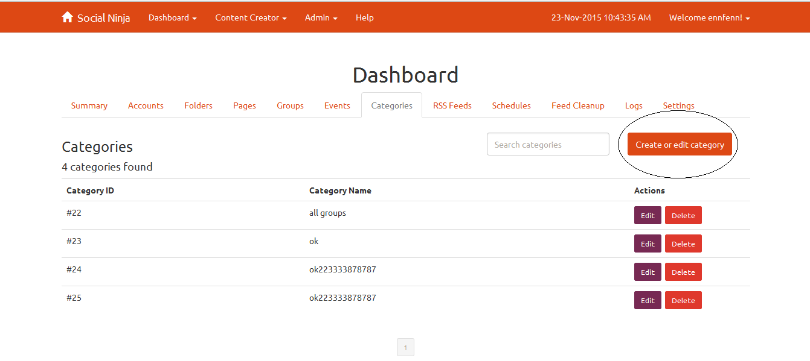 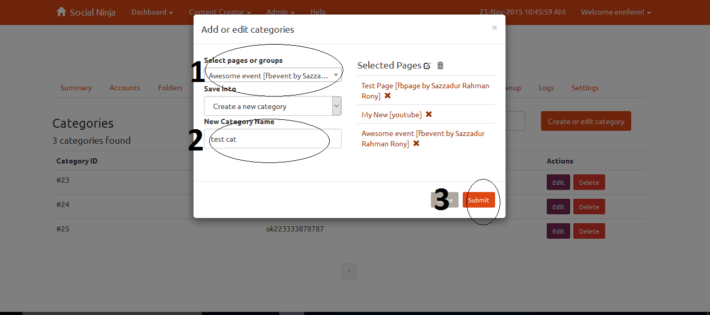
Checkout the video here https://www.youtube.com/watch?v=hUQcl48rUdc
Page and group selection in bulk
From version 1.5, you can select all of your groups, pages, profiles or all of the saved profiles of a selected category. To you this option click the edit icon beside Selected pages title while making schedule. Follow the images below for better understanding-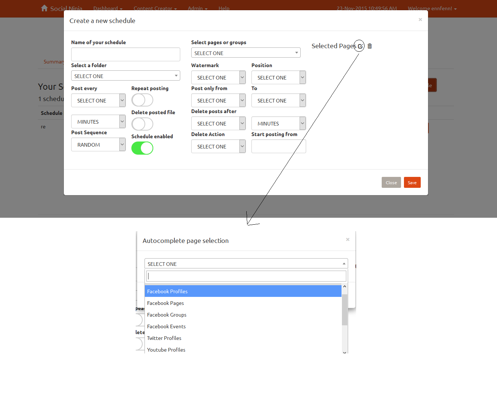
To clear bulk selection click the trash icon beside it.
Feed cleanup
Feed cleanup can be used to bulk delete/hide posts on your social profile. Hide option can only be used for facebook pages. This option can be useful to you when you want to delete lots of posts at a time. Just choose your social profile and the app will present to you a list of all posts made on your profile. Then select which posts you want to delete. In facebook and twitter, you can only delete posts one by one. So this will save your time and effort when a number of posts are need to be deleted. Note: Due to recent changes in facebook api, feed cleanup for facebook can only be used to delete posts made by this app.
Facebook Account Merge
From facebook api v2.4, users are assigned app scoped ids. Which means the same user will not get the same id across different apps. So in case your first app is suspended, you might be adding another app in your dashboard. Then login with the new app and add the same facebook accounts with new app. But alas! You will see multiple entity of the same facebook id - one for the last old app and other for the new app. In that case, the facebook account merger is for you. Please select the account you wish to keep in first option box and then choose the account you want to merge with.
Remember: When you merge, all the data from 2nd account is deleted except the id of the 2nd account which is retained instead of the id of the 1st account. But all the data of the 1st account is retained. If you added new app, please keep your old id (labelled as EXPIRED) and merge the new one. This action cannot be undone! So choose carefully!
Media Editor
You can edit images and videos if they are allowed by admin configurations. Maximum allowed filesize is 250MB. With image editor, it is possible to resize/crop image, add watermark text/image or special visual effects. With video editor, you can create screenshot at a specific moment of the video, create a tile of screenshots from entire video, cut or join chunks from video. Media editor can be accessed from Content Creator > Media Editor menu.
Adding watermark : http://www.youtube.com/watch?v=Qtrfwih1rKA Create watermark from text : http://www.youtube.com/watch?v=e1IeDkykaxs
Meme Generator
Meme generator is available at Content Creator > Meme Generator menu. Uploading an image, you can add as many text as you want. You can also reposition the added texts dragging them over the image. After meme creation, don't forget to import them in your folders
HTML to image converter
This tool can convert HTML snippet to image. Use this tool with caution. Do not paste large html codes. It may cause your browser to crash. Access this tool from Content Creator > HTML to Image Creator menu
Using image editor : http://www.youtube.com/watch?v=4NhifyjNh1k Using video editor : http://www.youtube.com/watch?v=jomKcoh2Bm4
Text to watermark image converter
This app only allows you to choose watermark images that you uploaded into Content Creator > Creator Tools menu. In case you want to add text as watermark, you can utilize this tool to convert your desired text to watermark image and then import the created image to your watermark list. Now, you can choose that watermark image to be used with your posting schedules.
Slideshow creator
This tool can be accessed from Content Creator > Creator Tools. Choose your folder, sildeshow duration and transition type. The task will be added in a queue. Once the queue is processed you can download it from Content Creator > Queued Videos
Uploading watermark logos or view finders
You can upload your watermark logos and view finders from Content Creator > Creator Tools. The use of view finders may be vague to some of the users. View finders can be used in the image editor. When you apply special effects to your image, you will find an option to add a view finder to your image. We added some default view finders for your use. If you wish to use your own view finders, upload it first in Content Creator > Creator Tools.
Managing Queued Videos
Video editor and slideshow creator do not process your request immediately. They are added into a queue and processed serially. You can view and manage all your queues from Content Creator > Queued Videos. Download link will appear as soon as the queue is processed. If you want to delete any task, you must delete it before the queue is locked. Once locked you can only delete the queue when it is done. You can add maximum 5 unfinished queues at a time. To add more you must delete some unfinished queue first to make room for new task.
Image and Video Downloader
Image and video downloaded can be used to download images and videos using a link. Among video hosts, this app supports Youtube, Facebook Videos, Vimeo and Dailymotion. Never try to download copyrighted videos. If you upload those copyrighted videos in your social accounts, they will be suspended sooner or later. And image downloader tool can only be used to download images from direct link. No html page link is supported. If a direct link is provided, the app will show image info and a thumbnail and allow you to choose a folder to import the image. Access this tool from Content Creator > Image and Video Downloader.
HTML to Image Conversion : http://www.youtube.com/watch?v=SzlERVWRwKc Meme Generation : http://www.youtube.com/watch?v=aY4eRHNeULI
Using Downloader Tool : http://www.youtube.com/watch?v=2-X5TPwZkZI Comment Bumping : http://www.youtube.com/watch?v=v1jf7Kj_WMU
Sources and Credits
The following scripts were used in this app-
BootsWatch, Thomas Park, https://github.com/thomaspark/bootswatch DropZone, Matias Meno, http://www.dropzonejs.com/ cool php captcha, Jose Rodriguez, http://code.google.com/p/cool-php-captcha EaselJS, gskinner.com, inc http://createjs.com/ rasterizeHTML.js, Christoph Burgmer http://www.github.com/cburgmer/rasterizeHTML.js Spectrum Colorpicker, Brian Grinstead https://github.com/bgrins/spectrum Cropper, Fengyuan Chen and contributors https://github.com/fengyuanchen/cropper jQuery-ui-Slider-Pips, Simon Goellner vintageJS, Robert Fleischmann Select2, https://github.com/select2/select2
Once again, thank you so much for purchasing this script. As I said at the beginning, I'd be glad to help you if you have any questions relating to this script. No guarantees, but I'll do my best to assist.
InspiredDev